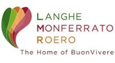

Partecipare alla Fiera del Tartufo di Montiglio Monferrato
In questa pagina sono raccolte le principali informazioni utili per organizzare la propria partecipazione e conoscere in anticipo i servizi disponibili.
Informazioni essenziali
Data: 4 e 11 Ottobre 2026
Luogo: Montiglio Monferrato (AT)
Mappa dell'evento:

Contatti accessibilità e informazioni
Per esigenze particolari è consigliato contattare l'organizzazione prima dell'evento.
Mappa e orientamento
Se vuoi arrivare subito alla risposta giusta, scegli il pulsante più adatto:
Si consiglia di consultare la mappa prima della visita per pianificare il percorso più adatto alle proprie esigenze.
Punti di accoglienza e informazioni
Durante l'evento saranno attivi due punti di accoglienza dove ottenere informazioni, supporto e orientamento:
Punto Accoglienza 1
Ufficio Turistico
Piazza Regina Margherita 18

Punto Accoglienza 2
Entrata Sala Consiliare presso il Comune di Montiglio Monferrato
Piazza Umberto I

Il personale e i volontari potranno fornire indicazioni sui percorsi, sulle attività in programma e sui servizi disponibili.
Parcheggi riservati
La Fiera mette a disposizione parcheggi dedicati alle persone con contrassegno disabili.
Pieve di San Lorenzo
Parcheggi riservati in Via Padre Carpignano e davanti alla Pieve di San Lorenzo.
Via Padre CarpignanoPieve di San Lorenzo

Parcheggio Via Torino
Parcheggio riservato sullo spiazzo in Via Torino.
Via Torino

Entrambi consentono un accesso agevole all'area degli espositori.
Salone Polifunzionale Bruno Mellone
Per accedere all'area ristorazione con prenotazione.
Ingresso da Via Roma-Via Mazzini

Piazza Umberto I
Per partecipare al Walking Tour del centro storico.
Piazza Umberto I

Area Degustazione Pro Loco
Per accedere all'area di ristorazione senza prenotazione.
Via Asti

Percorsi consigliati
Area espositori
La visita agli espositori intorno a Piazza Regina Margherita può essere effettuata lungo percorsi privi di barriere rilevanti.
Ristorazione presso il Salone Polifunzionale
L'area è attrezzata per consentire l'accesso alle persone che utilizzano carrozzine o ausili per la mobilità.
Pieve di San Lorenzo
È possibile salire con la vettura fino al sagrato della Pieve per il tempo limitato della visita ed in caso di necessità.


clicca sul logo LMR per informazioni sul Walking Tour e prenotazioni
Walking Tour gratis per le persone con disabilità e accompagnatori
Il percorso panoramico comprende alcune aree che presentano limitazioni:
- la Chiesa di Sant'Andrea presenta gradini di accesso;
- l'Archivio Storico è al primo piano.
Restano invece accessibili:
- la Chiesa di Santa Maria della Pace;
- il percorso panoramico esterno.
Si segnala la presenza di alcuni tratti con pavimentazione in porfido ed in lieve salita.
Servizio trenino
Nel pomeriggio il trenino facilita la salita verso il Castello e le aree del Walking Tour.
Al mattino e alla sera il servizio viene utilizzato anche per il collegamento con la stazione ferroviaria.
Servizi igienici accessibili
Sono disponibili tre servizi igienici attrezzati per persone con disabilità:
- presso l'Ufficio Turistico;
- presso il Salone Polifunzionale;
- presso l'Area Degustazione Pro Loco.
Sono inoltre presenti ulteriori servizi pubblici distribuiti nell'area dell'evento.
Area di decompressione e spazio tranquillo
Per chi necessita di una pausa in un ambiente più tranquillo sono disponibili due aree di decompressione: una dietro l'Ufficio Turistico, la seconda presso il giardinetto per bambini in Piazza Regina Margherita.
Le aree sono separate dalla zona principale della Fiera e offrono uno spazio più raccolto a breve distanza dalle zone espositori.
Informazioni su alimentazione e allergeni
Le preparazioni alimentari della Pro Loco non garantiscono l'assenza di contaminazione crociata.
Le offerte alimentari degli espositori sono di responsabilità degli stessi.
Richiedere assistenza prima dell'evento
Per migliorare l'accoglienza e predisporre eventuali servizi dedicati è possibile comunicare in anticipo le proprie esigenze contattando i volontari della Pro Loco di Montiglio Monferrato.
Contatta il supporto dedicato ora per ricevere informazioni personalizzate:
L'organizzazione raccoglie suggerimenti e osservazioni per continuare a migliorare le future edizioni dell'evento.
Con il sostegno della Fondazione CRT
La Fiera del Tartufo di Montiglio Monferrato è realizzata grazie al sostegno della Fondazione CRT nell'ambito del programma "Eventi for All", che promuove eventi inclusivi e accessibili fondati su sostenibilità ambientale, protagonismo giovanile e valorizzazione del volontariato, con l'obiettivo di generare partecipazione e valore per il territorio.